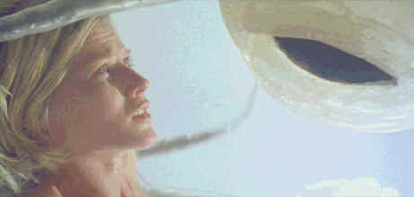

Sterling/1998/95m/WS 2.35
Remember Rosemary's Baby? It was great horror from Roman Polanski. An actor sells his wife out to the devil and she's impregnated by the scion of the dark. Great concept. Tough pregnancy. In Progeny, poor Sherry Burton is chosen to be the birth host for an Alien baby. Why would an Alien chose Progeny's Sherry for a birth mother? Beats me. Maybe it's that her husband Craig is an intern at a local Emergency Room and this is his penance for treating too many patients as Aliens. That's it, that's it. Anyway, after the wild night of impregnation was visited upon the happy couple accompanied by a series of blue/white flashes and loud unconvincing sound effects, they notice that two hours has gone by since they began their carnal ritual and it only seems like a second. The mystery unfolds as a distraught Craig consults a psychiatrist about the strange night. Meanwhile Sherry's getting some early movement in the womb and an ultrasound reveals she's gonna be the Momma of something a little bit different. Before the pregnancy goes full term an Alien expert Bert Clavell is brought on board by Craig and together they take matters into their own hands.
 |
What are you looking at buddy?t©Sterling |
Ultimately Progeny is boring and ponderous. The script
fails to muster much energy, Alien or otherwise. The visual effects are not very effective
and the sound effects are poorly executed. Do not expect more from the acting than the
script or special effects deliver. Arnold Vosloo has the unenviable task of giving Craig a
personality. It doesn't happen. Jillian McWhirter grimaces through the role of Sherry.
Secretly, I thought I knew what she was grimacing about. Brad Dourif shows up as Bert
Clavell. It's a strain to play convincing when the script pages are floating in an Alien
karma, but the climatic OR scene makes the grade as vintage bad. When Brad Dourif runs out
of the OR I think it's because he simply cannot stand doing another take.
This is substandard DVD fare primarily because the source
material is shot so poorly. The resulting transfer features too many muddy indoor scenes
lit with a greenish fluorescent look. This saps whatever vitality the DVD might have had.
Maybe this is an Alien DVD and through their optics it looks great. Not on this planet
however. The Dolby Digital 2 channel surround sound effects are somewhat overbearing.
Dialogue is clear and there's decent separation of the tracks. This special
edition boasts rare audio commentary from actual Alien abductees. The interviews are
fairly predictable. The women "abductees" believe they were taken by Aliens. But
it's not funny and I refuse to make a judgment. The regression therapist who is
interviewed comes closest to inspiring tittering responses. There is a wealth of audio
commentary on this film from the director, producers, writers. Yes, Progeny
reveals everything you wanted to know about Alien abduction and were afraid to
ask.